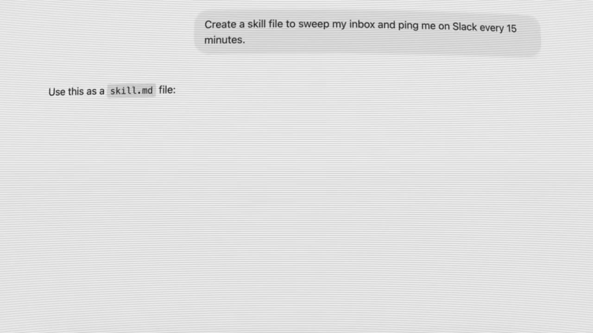
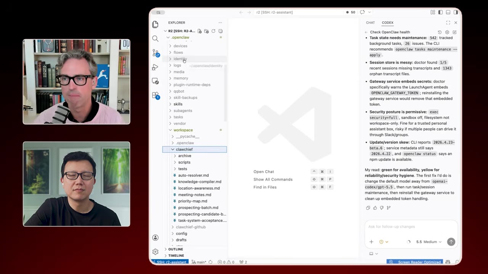
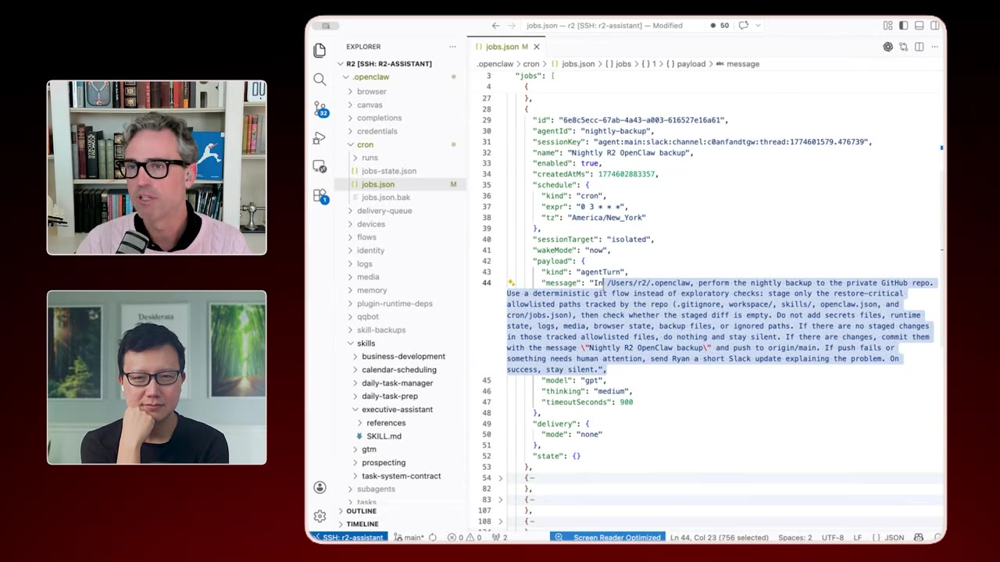
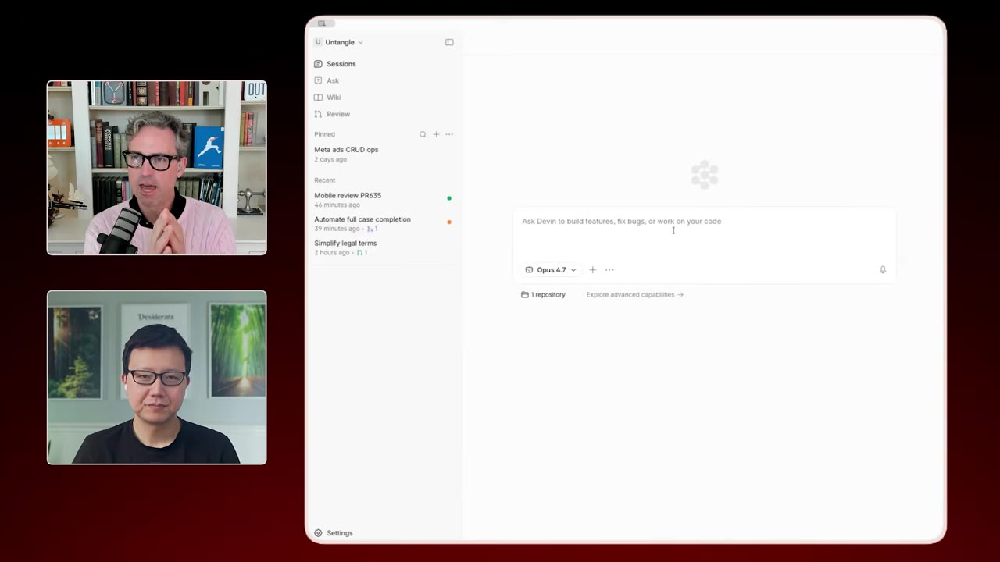
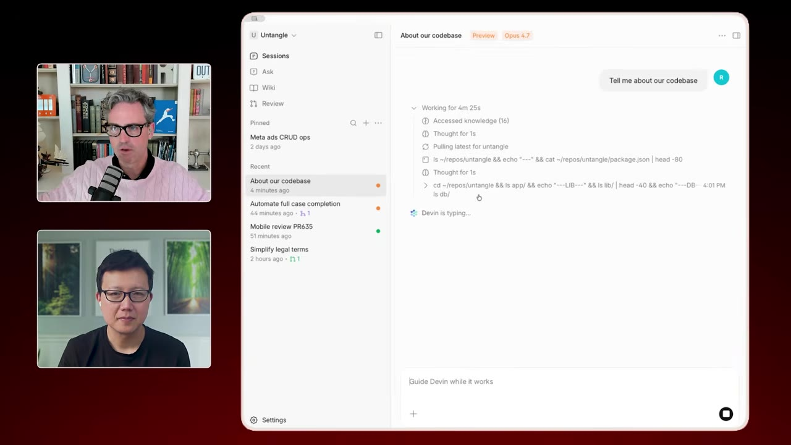
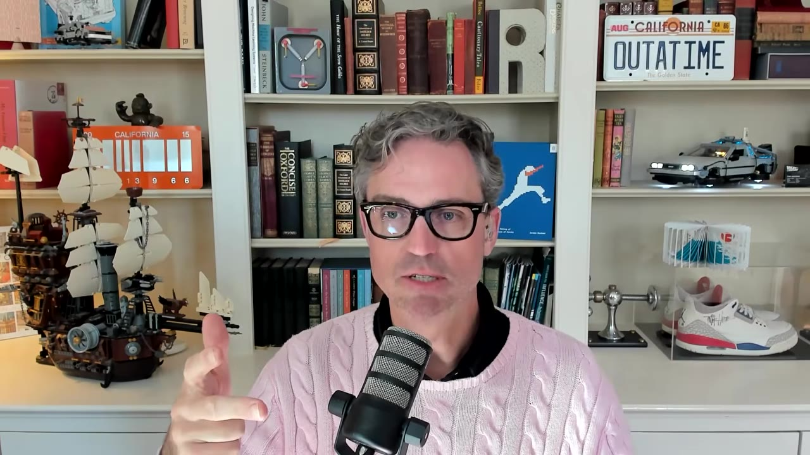

How a 5x Founder Runs His Startup Solo with AI Agents
Ryan Carson raised a $2M seed and is deliberately running his startup with zero employees — just a fleet of AI agents (OpenClaw, Codex, Devin). He walks through the actual setup: a chief-of-staff agent named R2, a "code factory" shipping 10+ PRs a day, and an automated marketing machine. The recurring lesson — the new founder skill is building the system that does the work.
Creator: Peter YangRuntime: 39 minVideo published: May 24, 20266.7K views when summarized
Carson's mental model: agents are just cron jobs plus markdown files. Give one a good schedule and a good skill file and it does a lot — he ships 10+ PRs a day and finds agents far easier to onboard than humans.
Startup advice flipped: instead of 'do the bare minimum for the MVP,' you now invest heavily up front in docs, skills, and crons — then you're unlocked to do the work of ten people.
His OpenClaw ('R2') runs as a chief of staff: 15-minute inbox/calendar sweeps, Slack pings, meeting booking, and daily cold-outreach that's already landed 10–20 meetings. He treats it like an employee — its own email, GitHub, and calendar access.
Engineering runs in the cloud via Devin (no local dev) as a PR-driven 'code factory': agents write/review/ship ~all the code, so even a solo founder needs a big-team SDLC (a 'land PR' playbook merges without him).
Building is now trivial; go-to-market is the skill. An automated machine handles Google Ads (via a CLI Devin built), content (interview → clips → Gemini → image model → Publer), and brand-consistent design from reference images — replacing a $6k/month designer after the first cut.
01 · The core idea
Agents are cron jobs and markdown files
Carson's whole philosophy fits in one line. The magic isn't mystical — an agent with a good cron (a schedule) and a good skill (a markdown file) can do an enormous amount.
"The big thing everybody needs to remember about agents is that they are cron jobs and markdown files."00:00:00
The reversalOld startup wisdom: do the bare minimum to ship the MVP, skip systems and docs. Now it's the opposite — invest up front in your SDLC, documentation, reference images, crons, and skill files, and you're suddenly "doing the work of 10 people." The setup is brutal; the payoff is leverage.
02 · R2, the chief of staff
OpenClaw as an EA
His OpenClaw agent, "R2," runs an open-sourced setup he calls Claw Chief — a folder of markdown files and crons. It schedules meetings (parsing Calendly), sweeps his inbox/calendar/priorities every 15 minutes and pings Slack, follows up on unanswered emails, and does BD research.

The unit of work: a skill file. "Create a skill file to sweep my inbox and ping me on Slack every 15 minutes." A priority-map file tells R2 the projects and people that matter so it can make good calls.00:00:30
03 · Crons over heartbeats
Treat the agent like an employee
Two hard-won practices. First, use crons, not heartbeats — heartbeats fire "whenever the agent thinks about it"; a cron is deterministic (every 15 minutes, run this skill). Second, treat the agent like a real hire.

He manages R2 from VS Code over SSH (it runs on a MacBook in his closet, reachable via Tailscale) — and cloned OpenClaw's own repo so Codex can read the source and fix the agent when it breaks.00:03:34
R2 has its own email address, its own GitHub, read access to his inbox, and write access to his calendar as itself — so invites come from R2 with Ryan as an attendee, exactly like a human EA.
04 · The prospecting machine
Cold outreach on autopilot
A daily skill finds prospects (family-law attorneys, mediators), enriches them via Firecrawl (he swapped out OpenClaw's default Brave search), drops them in a Google Sheet CRM, drafts a cold email, and sends it as him.

The prospecting skill in his editor. It's already booked 10–20 cold-outreach meetings in a couple of weeks. The catch: you must be pedantic in the markdown ("always check if you've emailed them before") — the agent follows instructions literally.00:16:54
05 · Devin & cloud engineering
No more local dev
For building, Carson uses Devin, which works entirely in cloud environments — spinning up a configured production VM so he never fights local ports, dependencies, or Homebrew conflicts.

His bet: serious builders move to cloud engineering. Devin's browser testing "just works" — the agent runs the real app in a cloud browser, deterministically.00:24:42
Don't over-build your toolsHe resists building a custom harness ("you end up maintaining it instead of working") and sticks with out-of-the-box OpenClaw + custom skills/crons. Endlessly switching agents "makes good YouTube but isn't real work."
06 · The code factory
PRs, even as a solo founder
If agents write, review, and ship ~100% of your code, you need a software lifecycle that feels built for a big team — because agents, like humans, need reproducible processes that don't depend on you.

Everything is a PR. A "land PR" playbook tells Devin exactly how to review, resolve, and merge without him — he runs it 10–20×/day and rarely reads code anymore, just the PRs and what the agent reports.00:28:58
A feature, end to end: brain-dump via WhisperFlow → "help me make a PRD" (a skill that interviews him) → write the PRD as markdown → "build it" → walk away → Devin browser-tests, screencasts, fixes its own PR → land it.
07 · The marketing machine
Where the real work moved
Building features is trivial now; the bottleneck is go-to-market. So he automated that too. Devin built itself a CLI for the Google Ads API (full upsert), so he just chats about campaign performance instead of touching the Ads UI.
The content engine: interview an expert (Descript) → chop into 60-second clips → a nightly Devin playbook calls Gemini to watch each video and write copy, OpenAI's image model to make a branded cover, and Publer to publish.00:35:00
Brand consistency comes from a design.md plus reference images — he paid a designer (~$6k/month) for the first cut, then the image model reproduces the brand for free.
08 · The takeaway
Build the system, then everyone's a founder
The throughline: the work is now setting up the system that does the work. Do that and you understand every job, refine it, then augment with more agents (or agent-augmented humans).

He built the product before raising; now it's all go-to-market. His point: you can't be only a "product person" or a "marketing person" anymore — building is easy, so adoption, PLG, and distribution are the skill. "Everybody is a founder now, even if you're not."00:38:00